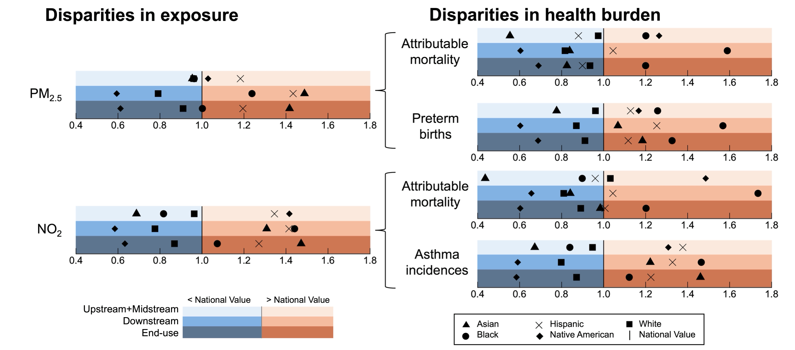
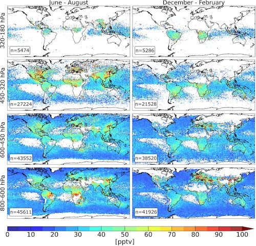
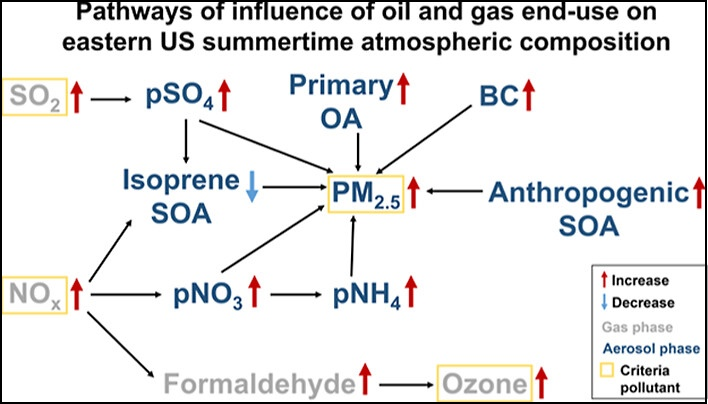
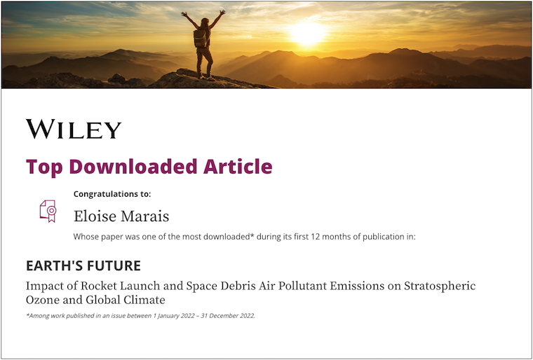
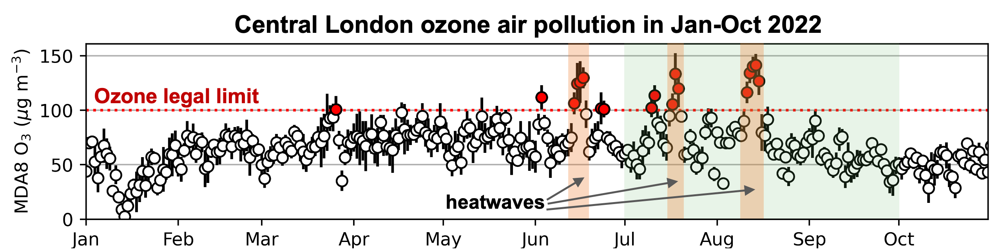

Eloise showcases the group's policy-informing research using Earth Observations at the EU Clean Air Forum.

Karn and Eloise invited to present their recent Science Advances research to Sierra Club.

We quantify absolute and disparaties in health burdens from US oil and gas sector air pollution.
[Find out more in our Science Advances paper]
[Find out more in our Science Advances paper]
We characterise reactive nitrogen in the upper troposphere using NASA DC8 observations and GEOS-Chem.
[Find out more in our recently published paper]
[Find out more in our recently published paper]
Satellite-derived estimates of reactive nitrogen emissions from fires in Southern Africa.
[Find out more in our recently published paper]
[Find out more in our recently published paper]
Eloise invited expert for joint UNEP-UNOOSA workshop on environmental impacts of space activities
.
Near-automated estimate of NOx emissions from satellites applied to large cities in Asia.
[Find out more in our recent JGR paper]
[Find out more in our recent JGR paper]

Jacob group alumni get-together at AGU 2024.
Eloise guest with Tim Peake on BBC 4 Rare Earth podcast episode The Final Frontier.

Our work retrieving and validating vertically resolved NO2 from TROPOMI now in ACP.

Our work on elucidating the influence O&G end-use on summer air quality in the eastern US now in ES&T.
Our work on satellite megaconstellation air pollutant and CO2 emissions available from Nature Scientific Data.
Eloise on BBC Radio 4's Inside Science to discuss how green is space travel
Report by Eloise halts natural gas production at a UNESCO Heritage Site. Link to news article

Ryan et al. (2022) awarded Wiley certificate for most downloaded article.

Connor and Eloise presented at the ESA workshop on Understanding the Atmospheric Effects of Spacecraft Re-entry.
[Talk slides on Presentations page]
[Talk slides on Presentations page]
Public health benefits if the UK adopted the best available emission control measures.
[Find out more in our recent GeoHealth paper]
[Find out more in our recent GeoHealth paper]
Karn speaks to the BBC about his research on rapid air quality degradation in tropical cities

Heatwaves and ozone air pollution in Central London.
[Find out more in our recent ACP paper]
[Find out more in our recent ACP paper]
Rural agriculture and pollution from continental Europe dominant source of PM2.5 in UK cities.
[Find out more in our recently published paper]
[Find out more in our recently published paper]
Our work on the impact of rocket launches on climate and the ozone layer published in Earth's Future.

Our work on the rise in early deaths from air pollution in fast-growing tropical cities now in Science Advances.

Our work on greenhouse gas and air pollutant emissions from powerships now in Environ. Sci. Adv.

Our work on satellite-derived UK ammonia emissions published in the J. Geophys. Res.